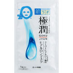
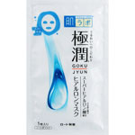

商品の特徴
本品１枚で、化粧水・乳液・美容液・クリーム・マスク のスキンケアができるシートマスクです。
取り出しやすいＢＯＸタイプです。
- 成分・分量
- ＜成分＞
水、ＤＰＧ、ＢＧ、グリセリン、加水分解ヒアルロン酸（ナノ化ヒアルロン酸）、アセチルヒアルロン酸Ｎａ（スーパーヒアルロン酸）、ヒアルロン酸Ｎａ、ナイアシンアミド、ジグリセリン、ＰＥＧ／ＰＰＧ／ポリブチレングリコール－８／５／３グリセリン、ＰＰＧ－１０メチルグルコース、メチルパラベン、（アクリレーツ／アクリル酸アルキル（Ｃ１０－３０））クロスポリマー、シロキクラゲ多糖体、フェノキシエタノール、ＴＥＡ、ＥＤＴＡ－２Ｎａ
- 用法及び用量
- ＜使用方法＞
１．洗顔後、化粧水でお肌を整えたあとに、袋からマスクを取り出し、丁寧に広げてください。（衣服等につかないよう液垂れにご注意ください。）
２．マスクを目と口の位置に合わせ、顔全体に密着させてください。
３．そのまましばらくの間（５～１５分程度）おいてから、マスクをはがしてください。
４．顔に残った液は、手でなじませてください。
＊乳液、美容液、クリーム等はマスクの後にご使用いただけます。
 
